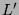
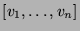
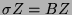
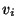

Usage
(nonSing?, v, A, ) := makeNonSingular(L,)
Signature
makeNonSingular: (%, Automorphism R) (Boolean, Vector R, DenseMatrix R, %)
| Parameter | Type | Description |
|---|---|---|
| L | % | A difference system |
| Automorphism R | The difference automorphism for L |
Description
Returns a flag nonSing?, a vector , a matrix A and a system of the form  where B is nonsingular, such that the solutions of L are
where Z ranges over the solutions of . In nonSing? is true, then L already had a nonsingular matrix, each  is 1 and A is the identity matrix.
Remarks
makeNonSingular is only applicable to (generalized) difference systems, not to differential systems.